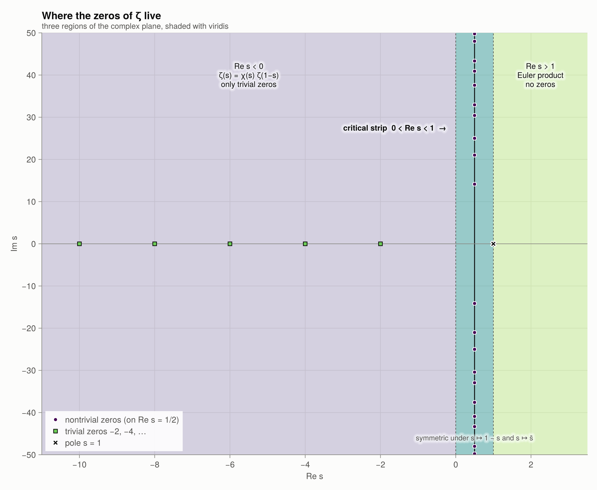

4 · Trivial zeros
Where they come from
Take the functional equation
\[\zeta(s) = 2^s \pi^{s-1} \sin\!\left(\frac{\pi s}{2}\right) \Gamma(1-s)\, \zeta(1-s)\]
and put $s = -2n$ with $n \ge 1$:
- $\sin(\pi s/2) = \sin(-n\pi) = 0$,
- $\Gamma(1+2n) = (2n)!$ is finite and nonzero,
- $\zeta(1+2n)$ is finite and nonzero, by the Euler product.
Hence $\zeta(-2n) = 0$. These are the trivial zeros $-2, -4, -6, \dots$
trivial_zeros(6)6-element Vector{Int64}:
-2
-4
-6
-8
-10
-12zeta.([-2.0, -4.0, -6.0, -8.0])4-element Vector{Float64}:
0.0
0.0
0.0
0.0Why “trivial”?
In the completed function $\Lambda(s) = \pi^{-s/2}\Gamma(s/2)\zeta(s)$ the factor $\Gamma(s/2)$ has poles at $s = 0, -2, -4, \dots$, and these cancel the zeros of $\zeta$ exactly. The trivial zeros are an artefact of the Gamma factor (the "archimedean place"), not of the primes. $\Lambda$ and $\xi$ have no trivial zeros at all, and their zeros are exactly the nontrivial zeros of $\zeta$.
Values at the other negative integers
At $s = 0, -1, -3, -5, \dots$ the sine is nonzero, and the value is a Bernoulli number:
\[\zeta(-n) = (-1)^n \frac{B_{n+1}}{n+1} \qquad (n \ge 0).\]
[n => zeta_negint_exact(n) for n in 0:9]10-element Vector{Pair{Int64, Rational{BigInt}}}:
0 => -1//2
1 => -1//12
2 => 0
3 => 1//120
4 => 0
5 => -1//252
6 => 0
7 => 1//240
8 => 0
9 => -1//132So $\zeta(0) = -\tfrac12$, $\zeta(-1) = -\tfrac1{12}$, $\zeta(-3) = \tfrac1{120}$, and so on. The odd-index Bernoulli numbers $B_3, B_5, \dots$ vanish, which gives the trivial zeros a second time.
Growth between the trivial zeros
For $\sigma \to -\infty$ the factor $\Gamma(1-\sigma)$ makes $|\zeta(\sigma)|$ grow factorially, while $\sin$ forces a sign change at every even integer. Near the origin the oscillation is tiny:
plot_zeta_real()
zeta(-20.5), zeta(-30.5)(-108.2174750587755, 1.4977487127793172e8)There are no other real zeros
On $(0, 1)$, $\zeta(\sigma) < 0$, because $\eta(\sigma) > 0$ (an alternating series with decreasing terms) while $1 - 2^{1-\sigma} < 0$. For $\sigma > 1$, $\zeta(\sigma) > 1$. For $\sigma < 0$ the functional equation shows that the only zeros are at $-2n$. Every other zero is non-real and lies in the critical strip, which is the subject of the next chapter.
plot_strip_schematic()
Functions in this chapter
trivial_zeros, zeta_negint_exact, bernoulli, chi_factor, zeta.